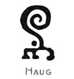
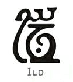
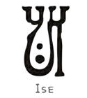
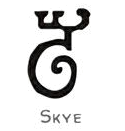
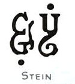
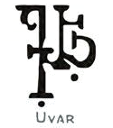
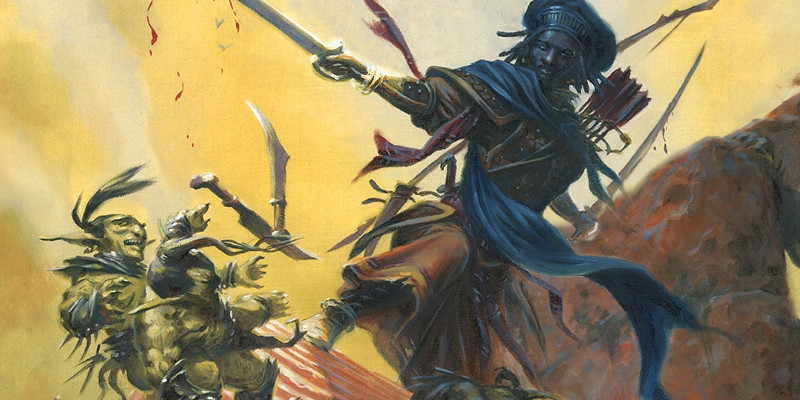

Archétypes martiaux de guerrier
Au niveau 3, un guerrier gagne la capacité Archétype martial. Voici de nouvelles options d'archétypes :
Archer arcanique (v2)
Version officielle du Xanathar's Guide to Everything de cette sous-classe publiée initialement dans la rubrique Unearthed Arcana.
Un archer arcanique étudie une technique d'archerie elfique unique en son genre qui tisse la magie dans ses attaques et produit des effets surnaturels. Parmi les elfes, les archers arcaniques font partie des meilleurs guerriers d'élite. Ils surveillent les limites des domaines elfes, gardant un œil perçant ouvert sur les intrus et utilisant leurs flèches imprégnées de magie pour défaire monstres et envahisseurs avant qu'ils n'atteignent les campements elfes. Au cours des siècles, les techniques de ces guerriers elfes ont été apprises par les membres d'autres races, qui peuvent eux aussi combiner leurs aptitudes magiques avec l'archerie.
Connaissances de l'archer arcanique
Au niveau 3, vous acquérez une meilleure compréhension théorique de la magie ou apprenez les secrets de la nature. Vous gagnez la maîtrise de la compétence Arcanes ou de la compétence Nature, et apprenez le sort mineur prestidigitation ou le sort mineur druidisme.
Tir arcanique
Au niveau 3, vous apprenez à libérer des effets magiques spéciaux avec certains de vos tirs. Lorsque vous gagnez cette capacité, vous apprenez deux options de Tir arcanique de votre choix (voir Options de Tir arcanique ci-dessous). Une fois par tour, lorsque vous décochez une flèche d'un arc court ou d'un arc long dans le cadre de l'action Attaquer, vous pouvez appliquer une de vos options de Tir arcanique à cette flèche. Vous décidez d'utiliser l'option lorsque la flèche touche une créature, sauf si l'option n'implique pas un jet d'attaque. Vous avez deux utilisations de cette capacité, et vous récupérez toutes les utilisations dépensées lorsque vous terminez un repos court ou long.
Vous obtenez une option de Tir arcanique supplémentaire de votre choix lorsque vous atteignez dans cette classe les niveaux 7, 10, 15 et 18. De plus, chaque option s'améliore quand vous obtenez le niveau 18 de guerrier.
Flèche magique
Au niveau 7, vous obtenez la capacité d'imprégner vos flèches de magie. Lorsque vous décochez une flèche non magique avec un arc court ou un arc long, vous pouvez rendre cette flèche magique pour ce qui est de la résistance et de l'immunité aux attaques et aux dégâts non magiques. La magie disparaît de la flèche immédiatement après que le tir touche ou rate sa cible.
Tir incurvé
Au niveau 7, vous apprenez à diriger une flèche errante vers une nouvelle cible. Lorsque vous faites un jet d'attaque avec une flèche magique et que vous ratez, vous pouvez utiliser une action bonus pour relancer le jet d'attaque contre une cible différente située à 18 mètres ou moins de la cible d'origine.
Tir toujours prêt
À partir du niveau 15, votre archerie magique est toujours disponible lorsque le combat commence. Si vous lancez l'initiative et que vous ne possédez plus d'utilisation de Tir arcanique, vous en récupérerez une.
Options de Tir arcanique
La capacité Tir arcanique vous permet de choisir des options à certains niveaux. Toutes sont des effets magiques et chacune d'elles est associée à une école de magie. Si une option nécessite un jet de sauvegarde, le DD du jet de sauvegarde du Tir arcanique est de 8 + votre bonus de maîtrise + votre modificateur d'Intelligence.
Flèche affaiblissante. Vous tissez une magie nécromantique sur votre flèche. Si la flèche touche une créature, la cible subit 2d6 dégâts nécrotiques supplémentaires et doit également faire un jet de sauvegarde de la Constitution. En cas d'échec, les dégâts des attaques avec une arme de la cible sont réduits de moitié jusqu'au début de votre prochain tour. Les dégâts nécrotiques augmentent à 4d6 lorsque vous atteignez le niveau 18 dans cette classe.
Flèche agrippante. Quand cette flèche rencontre sa cible, une magie d'invocation crée des ronces épineuses qui s'enroulent autour de la cible. La créature touchée par la flèche subit 2d6 dégâts de poison supplémentaires, sa vitesse est réduite de 3 mètres, et elle subit 2d6 dégâts tranchants la première fois de chaque tour si elle se déplace de 30 cm ou plus sans se téléporter. La cible ou toute autre créature qui peut l'atteindre peut utiliser son action pour essayer d'enlever les ronces, ce qui nécessite un jet de Force (Athlétisme) réussi contre le DD du jet de sauvegarde de votre Tir arcanique. Sinon, les ronces perdurent pendant 1 minute ou jusqu'à ce que vous utilisiez cette option de nouveau. Les dégâts de poison et tranchants augmentent à 4d6 lorsque vous atteignez le niveau 18 dans cette classe.
Flèche de bannissement. Vous utilisez la magie d'abjuration pour essayer de chasser temporairement votre cible vers un endroit inoffensif dans la Féerie. Si la flèche touche une créature, celle-ci doit également réussir sur un jet de sauvegarde Charisme ou être bannie. Lorsque qu'elle est bannie de cette manière, sa vitesse est de 0 et elle est incapable d'agir. À la fin de son prochain tour, la cible réapparaît dans l'espace qu'elle a laissé ou dans l'espace inoccupé le plus proche si cet espace est occupé. Après avoir atteint le niveau 18 dans cette classe, une cible subit également 2d6 dégâts de force lorsque la flèche la touche.
Flèche chercheuse. Utilisant une magie divinatoire, vous donnez à votre flèche la possibilité de chercher une cible. Lorsque vous utilisez cette option, vous ne lancez pas de jet d'attaque pour l'attaque. Au lieu de cela, choisissez une créature que vous avez vue au cours la dernière minute écoulée. La flèche vole vers cette créature, contourne les angles si nécessaire, et ignore les abris partiels (50 %) ou importants (75 %). Si la cible est à portée de l'arme et qu'il y a un chemin assez large pour que la flèche l'atteigne, la cible doit faire un jet de sauvegarde de Dextérité. Sinon, la flèche disparaît une fois qu'elle a atteint sa portée. En cas d'échec au jet de sauvegarde, la cible subit les dégâts normaux de la flèche, plus 1d6 dégâts de force supplémentaires, et vous apprenez l'emplacement actuel de la cible. En cas de réussite, la cible ne prend que la moitié de ces dégâts et vous n'apprenez pas son emplacement. Les dégâts de la force augmentent à 2d6 lorsque vous atteignez le niveau 18 dans cette classe.
Flèche d'ombres. Vous imprégnez votre flèche d'une magie illusoire qui bloque la vision de votre ennemi par des ombres. Si la flèche touche une créature, celle-ci subit 2d6 dégâts psychiques supplémentaires et doit réussir un jet de sauvegarde de Sagesse ou être incapable de voir quelque chose à plus de 1,50 mètre de distance jusqu'au début de votre prochain tour. Les dégâts psychiques augmentent à 4d6 lorsque vous atteignez le niveau 18 dans cette classe.
Flèche envoûtante. Votre enchantement magique fait que cette flèche séduit temporairement sa cible. La créature touchée par la flèche subit 2d6 dégâts psychiques supplémentaires et vous choisissez un de vos alliés à 9 mètres ou moins de la cible. La cible doit alors réussir un jet de sauvegarde de Sagesse ou être charmée par l'allié que vous avez choisi jusqu'au début de votre prochain tour. Cet effet se termine de manière anticipée si l'allié choisi attaque la cible charmée, lui inflige des dégâts ou l'oblige à réaliser un jet de sauvegarde. Les dégâts psychiques augmentent à 4d6 lorsque vous atteignez le niveau 18 dans cette classe.
Flèche explosive. Vous imprégnez votre flèche d'un souffle d'énergie de force puisé dans l'école d'évocation. Immédiatement après que la flèche touche une créature, la cible et toutes les créatures dans rayon de 3 mètres autour d'elle subissent 2d6 dégâts de force chacune. Les dégâts de force augmentent à 4d6 lorsque vous atteignez le niveau 18 dans cette classe.
Flèche perforante. Vous utilisez la magie de transmutation pour transformer votre flèche en une flèche éthérée. Lorsque vous utilisez cette option, vous ne lancez pas de jet d'attaque pour l'attaque. Au lieu de cela, la flèche part sur une ligne droite de 30 cm de large et 9 mètres de long, puis disparaît. La flèche passe de manière inoffensive à travers les objets, ignorant les abris. Chaque créature sur cette ligne doit faire un jet de sauvegarde de Dextérité. En cas d'échec, une cible prend des dégâts comme si elle avait été touchée par la flèche, plus 1d6 dégâts perforants supplémentaires. En cas de réussite, une cible ne prend que la moitié de ces dégâts. Les dégâts perforants augmentent à 2d6 lorsque vous atteignez le niveau 18 dans cette classe.
Chevalier
Le chevalier est un colosse du champ de bataille, qui peut ignorer des attaques et protéger des alliés du danger. Les chevaliers se battent à cheval dès qu'ils le peuvent, et au combat ils sont censés repérer et neutraliser les forces adverses le plus fortes. Lors d'une aventure, ils sont comme un rempart en armure qui s'emploie à protéger le reste du groupe.
Né en selle
À partir du niveau 3, monter ou descendre d'une créature ne vous coûte que 1,50 mètre de mouvement au lieu de la moitié de votre vitesse de déplacement. En outre, vous avez un avantage aux jets de sauvegarde effectués pour éviter d'être désarçonné. Si vous êtes néanmoins désarçonné, vous pouvez automatiquement atterrir sur vos pieds si vous n'êtes pas incapable d'agir et que vous tombez de moins de 3 mètres.
Marque implacable
Au niveau 3, vous excellez à déjouer les attaques et à protéger vos alliés en menaçant vos adversaires. Lorsque vous touchez une créature lors d'une attaque au corps à corps avec une arme, vous marquez cette cible jusqu'à la fin de votre tour suivant. Toute créature ne pouvant être effrayée ignore cet effet. La cible ainsi marquée a un désavantage à tout jet d'attaque à l'encontre d'une créature autre que vous ou de quelqu'un d'autre l'ayant également marquée. Si une cible que vous avez marquée est à 1,50 mètre ou moins de vous à son tour, et qu'elle se déplace d'au moins 30 cm ou effectue une attaque avec un désavantage en raison de cette capacité, vous pouvez effectuer une attaque au corps à corps avec une arme contre elle en utilisant votre réaction. Ce jet d'attaque bénéficie d'un avantage et s'il touche, l'arme de l'attaque inflige des dégâts supplémentaires à la cible équivalents à votre niveau de guerrier. Vous pouvez faire cette attaque spéciale même si vous avez déjà utilisé votre réaction ce round-ci, mais pas si vous l'avez déjà utilisée ce tour-ci. Vous pouvez utiliser cette attaque trois fois, et vous en récupérez toutes les utilisations dépensées lorsque vous terminez un repos court ou long.
Équitation noble
Au niveau 7, vous maîtrisez deux compétences de votre choix parmi les compétences suivantes : Dressage, Histoire, Intuition, Persuasion ou Religion. Vous pouvez également opter pour une langue de votre choix à la place d'une compétence.
Rester en ligne
Au niveau 10, vous savez comment harceler et ralentir vos ennemis. En utilisant votre réaction, lorsqu'une créature se déplace d'au moins 30 cm dans un rayon de 1,50 mètre autour de vous, vous pouvez effectuer une attaque au corps à corps avec une arme contre cette créature. Si vous touchez, l'attaque inflige à la cible des dégâts supplémentaires équivalents à la moitié de votre niveau de guerrier, et la vitesse de la cible est réduite à 0 jusqu'à la fin de ce tour.
Frappe éclair
À partir du niveau 15, vous attaquez en privilégiant la rapidité au détriment de la précision. À votre tour, si vous disposez d'un avantage contre une cible au moment d'effectuer une attaque avec une arme, vous pouvez renoncer à cet avantage afin d'effectuer immédiatement une attaque supplémentaire contre la même cible en tant qu'action bonus.
Lame du défenseur
Au niveau 18, vous répondez au danger avec une vigilance extraordinaire. Vous pouvez utiliser votre réaction pour réaliser une attaque d'opportunité même si vous avez déjà utilisé votre réaction ce round-ci, mais pas si vous avez déjà utilisé votre réaction ce tour-ci. En outre, vous gagnez un bonus de +1 à la CA lorsque vous portez une armure lourde.
Samouraï
Le samouraï est un combattant qui vainc ses ennemis grâce à un état d'esprit implacable et combatif. La volonté d'un samouraï est quasi inébranlable, et les ennemis se trouvant sur son chemin n'ont que deux options : se rendre ou mourir au combat.
Esprit combatif
SAMOURAÏS, CHEVALIERS ET HISTOIRE
Bien que les samouraïs et les chevaliers médiévaux aient réellement existé, notre inspiration pour ces deux archétypes de guerrier repose sur la culture populaire (films et bandes dessinées), et non sur la vérité historique. Notre intention est de retranscrire en jeu l'imagerie et l'héroïsme associés à ces deux archétypes, davantage qu'une représentation historique rigoureuse de l'un ou l'autre.
À partir du niveau 3, la force de votre volonté peut vous protéger et vous aider à frapper juste. Par une action bonus à votre tour, vous pouvez bénéficier de deux avantages : obtenir un avantage à tous vos jets d'attaque et la résistance aux dégâts tranchants, perforants et contondants. Ces avantages durent jusqu'à la fin de votre prochain tour. Vous pouvez utiliser cette capacité trois fois, et vous en récupérer toutes les utilisations dépensées lorsque vous terminez un repos court ou long.
Courtisan élégant
À partir du niveau 7, votre discipline et votre sens du détail vous permettent d'exceller dans des situations sociales qui nécessitent le strict respect de l'étiquette. Vous pouvez ajouter votre modificateur de Sagesse à n'importe quel jet de Charisme destiné à persuader ou satisfaire un noble ou toute autre personne d'un haut statut social. De plus, vous obtenez la maîtrise d'une compétence de votre choix parmi les compétences suivantes : Histoire, Intuition ou Persuasion. Vous pouvez également opter pour une langue de votre choix à la place d'une compétence.
Volonté inébranlable
Au niveau 10, votre grande force de volonté vous permet d'ignorer les effets d'attaques mentales. Vous gagnez la maîtrise des jets de sauvegarde de Sagesse. Si vous possédez déjà cette maîtrise, vous gagnez, au choix, la maîtrise des jets de sauvegarde d'Intelligence ou de Charisme.
Frappe éclair
À partir du niveau 15, vous attaquez en privilégiant la rapidité au détriment de la précision. À votre tour, si vous disposez d'un avantage contre une cible au moment d'effectuer une attaque avec une arme, vous pouvez renoncer à cet avantage afin d'effectuer immédiatement une attaque supplémentaire contre la même cible en tant qu'action bonus.
Fort face à la mort
Au niveau 18, votre état d'esprit combattif peut retarder l'étreinte de la mort. Si vous subissez des dégâts qui vous feraient passer à 0 point de vie, vous pouvez retarder ces dégâts et effectuer immédiatement un tour de combat en bonus, interrompant le tour de combat en cours. Vous ne prenez pas les dommages jusqu'à ce que ce tour bonus soit achevé. Il vous est alors possible de faire des choses, comme par exemple bénéficier d'une résistance aux dégâts, ce qui a pour effet de modifier les dégâts encaissés. Une fois cette capacité utilisée, vous devez terminer un repos long avant de pouvoir l'utiliser de nouveau.
Tireur d'élite
Le tireur d'élite est un maître du combat à distance. Excellent sniper et éclaireur aux yeux de lynx, ce guerrier est un adversaire dangereux qui peut vaincre toute une bande tant que ses cibles sont à portée.
Objectif figé
Dès que vous choisissez cet archétype au niveau 3, votre objectif devient implacable. Par une action bonus durant votre tour, vous figez votre attention sur une créature que vous pouvez voir et qui est à portée d'une arme à distance que vous brandissez. Jusqu'à la fin de ce tour, vos attaques à distance avec cette arme gagnent deux avantages contre la cible :
- Les attaques ignorent les abris partiels et les abris importants.
- Pour chaque attaque réussie, l'arme inflige à la cible des dégâts supplémentaires égaux à 2 + la moitié de votre niveau de guerrier.
Vous pouvez utiliser cette capacité trois fois. Vous récupérez toutes les utilisations dépensées lorsque vous terminez un repos court ou long.
Regard attentif
À partir du niveau 7, vous excellez dans l'art de débusquer des ennemis cachés et autres menaces. Vous pouvez prendre l'action Chercher en tant qu'action bonus. Vous obtenez également la maîtrise d'une compétence au choix parmi : Perception, Investigation ou Survie.
Tir rapproché
Au niveau 10, vous apprenez à vous maîtriser en combat rapproché. Faire un jet d'attaque à distance à 1,50 mètre ou moins d'un ennemi n'impose pas de désavantage à votre lancer. En outre, si vous frappez une créature à 1,50 mètre ou moins de vous avec une attaque à distance durant votre tour, cette créature ne peut pas utiliser de réaction jusqu'à la fin de ce tour.
Frappe éclair
À partir du niveau 15, vous attaquez en privilégiant la rapidité au détriment de la précision. À votre tour, si vous disposez d'un avantage contre une cible au moment d'effectuer une attaque avec une arme, vous pouvez renoncer à cet avantage afin d'effectuer immédiatement une attaque supplémentaire contre la même cible en tant qu'action bonus.
Tir instantané
À partir du niveau 18, vous êtes toujours prêt à passer à l'action. Si vous prenez l'action Attaquer lors de votre premier tour de combat, vous pouvez faire une attaque à distance avec une arme supplémentaire dans le cadre de cette action.
Brute
Les brutes sont de simples guerriers qui utilisent de puissantes attaques et leur résistance physique pour combattre leurs ennemis. Certaines brutes combinent cette puissance physique avec une habileté tactique tandis que d'autres frappent jusqu'à ce que l'ennemi ne réponde plus.
Force de la brute
À partir du niveau 3, vous êtes capable d'utiliser vos armes avec une force particulièrement brutale. Lorsque vous touchez une cible avec une arme que vous maîtrisez et que vous lui infligez des dégâts, ceux-ci augmentent selon votre niveau de guerrier.
| Niveau de guerrier |
Augmentation des dégâts |
| 3 | 1d4 |
| 10 | 1d6 |
| 16 | 1d8 |
| 20 | 1d10 |
Résistance de la brute
À partir du niveau 7, votre ténacité vous permet d'ignorer des assauts qui auraient dévastés d'autres héros. Lorsque vous effectuez un jet de sauvegarde, jetez 1d6 et ajoutez le résultat au jet de sauvegarde. Si cela vous permet d'atteindre un total de 20 ou plus sur un jet de sauvegarde contre la mort, considérez le résultat comme un 20 naturel.
Style de combat supplémentaire
Au niveau 10, vous pouvez choisir un second Style de combat.
Critique dévastateur
À partir du niveau 15, lorsque vous réalisez un coup critique avec une attaque effectuée avec une arme, vous gagnez un bonus au jet de dégâts égal à votre niveau de guerrier.
Survivant
Au niveau 18, votre résistance au combat atteint son apogée. Au début de chacun de vos tours en combat, vous regagnez des points de vie égaux à 5 + votre modificateur de Constitution (minimum 1 point de vie). Vous perdez cette capacité si vous avez 0 point de vie ou si vous avez encore plus de la moitié de vos points de vie.
Chevalier runique
Vous avez découvert comment améliorer vos prouesses au combat et vos talents martiaux en utilisant le pouvoir surnaturel des runes. L'antique pratique de la magie runique est apparue avec les géants. Le Skiltgravr (« coupe-runes ») est partagé par tous les types de géants et vous avez probablement appris ces savoir-faire de première ou de seconde main d'un tel artisan mystique. Peut-être avez-vous tout bonnement commencé à vous y intéresser en découvrant le travail de géants sculpté dans les tunnels d'une colline ou sur les parois d'une grotte dans quelque montagne reculée, ou bien encore vous êtes-vous pris de passion pour l'approfondissement de connaissances sur des runes glanées auprès d'un sage voyageur. Peut-être même avez-vous rencontré un géant forgeron en personne. Le temps passant, vous avez alors appris à sculpter et à appliquer des runes sur votre équipement et vous savez maintenant comment invoquer leur magie. Vous êtes devenu un chevalier runique.
Maîtrises supplémentaires
À partir du niveau 3, vous maîtrisez les outils de forgeron et pouvez parler, lire et écrire le géant.
Magie runique
Au niveau 3, vous devenez capable d'utiliser des runes pour améliorer votre équipement. Dès l'obtention de ce savoir, vous apprenez comment inscrire deux runes de votre choix sur des armes, des armures ou des boucliers (voir « Options de runes »). Chaque fois que vous terminez un repos long, vous pouvez toucher un nombre d'objets égal au nombre de runes que vous connaissez et dessiner une rune unique sur chacun de ces objets. Pour être éligible, un objet doit être une arme, une armure ou un bouclier. Votre rune reste sur un objet jusqu'à la fin de votre prochain repos long. Un objet ne peut supporter qu'une seule de vos runes. Chaque fois que vous gagnez un niveau dans cette classe, vous pouvez remplacer une rune que vous connaissez par une autre.
Options de runes
Les runes sont toutes considérées comme des effets magiques. Si une rune nécessite un jet de sauvegarde, le DD associé est égal à 8 + votre bonus de maîtrise + votre modificateur d'Intelligence.
Haug (Rune des collines). La magie de cette rune confère une résistance qui n'est pas sans rappeler celle des géants des collines. Lorsque vous portez ou transportez un objet portant l'inscription de cette rune, vous avez un avantage aux jets de sauvegarde pour ne pas être empoisonné et la résistance aux dégâts de poison. De plus, vous pouvez invoquer la rune au prix d'une action bonus pour gagner la résistance aux dégâts contondants, perforants et tranchants pendant 1 minute. Une fois que vous avez invoqué la rune, vous ne pourrez plus le faire avant la fin de votre prochain repos court ou long.
Ild (Rune du feu). La magie de cette rune est emplie du savoir-faire artisanal des forgerons des géants du feu. Lorsque vous portez ou transportez un objet portant l'inscription de cette rune, votre bonus de maîtrise est doublé pour tout jet de caractéristique qui utilise votre maîtrise d'un outil. De plus, quand vous touchez une créature lors d'une attaque avec une arme, vous pouvez invoquer la rune afin qu'elle projette des chaînes enflammées : la cible doit réussir un jet de sauvegarde de Force ou être entravée pendant 1 minute. Tant qu'elle est entravée par les chaînes, la cible subie 2d6 dégâts de feu au début de chacun de ses tours. La cible peut relancer le jet de sauvegarde à la fin de chaque tour, bannissant les chaînes en cas de succès. Une fois que vous avez invoqué la rune, vous ne pourrez plus le faire avant la fin de votre prochain repos court ou long.
Ise (Rune du givre). La magie de cette rune s'inspire du calme stoïque des géants du givre. Lorsque vous portez ou transportez un objet portant l'inscription de cette rune, vous avez un avantage aux jets de Sagesse (Dressage) et de Charisme (Intimidation). De plus, vous pouvez invoquer la rune au prix d'une action bonus afin d'augmenter votre Force de 2 pendant 10 minutes. Cette augmentation peut conduire à dépasser le maximum de 20, mais pas 30, pour cette caractéristique. Une fois que vous avez invoqué la rune, vous ne pourrez plus le faire avant la fin de votre prochain repos court ou long.
Skye (Rune des nuages). La magie de cette rune s'apparente au caractère trompeur des géants des nuages. Lorsque vous portez ou transportez un objet portant l'inscription de cette rune, vous avez un avantage aux jets de Dextérité (Escamotage) et de Charisme (Tromperie). De plus, quand vous ou une créature que vous pouvez voir dans un rayon de 9 mètres autour de vous êtes touché par un jet d'attaque, vous pouvez utiliser votre réaction pour invoquer la rune et faire en sorte que cette attaque cible désormais une autre créature située également dans un rayon de 9 mètres autour de vous (autre que l'attaquant) en utilisant le même jet d'attaque. Cette propriété magique peut transférer l'attaque quelle que soit la portée de l'attaque. Une fois que vous avez invoqué la rune, vous ne pourrez plus le faire avant la fin de votre prochain repos court ou long.
Stein (Rune des pierres). La magie de cette rune est imprégnée de la perspicacité des géants de pierre. Lorsque vous portez ou transportez un objet portant l'inscription de cette rune, vous avez un avantage aux jets de Sagesse (Intuition) ainsi que la vision dans le noir sur 18 mètres. Si vous possédez déjà la vision dans le noir, sa portée sera alors augmentée de 9 mètres. En outre, lorsqu'une créature que vous pouvez voir termine son tour à 9 mètres ou moins de vous, vous pouvez utiliser votre réaction pour invoquer la rune et obliger la créature à effectuer un jet de sauvegarde de Sagesse. En cas d'échec, vous charmez la créature pendant 1 minute. Durant toute la durée de votre charme, la créature a une vitesse de 0 et est incapable d'agir, comme dans un état de torpeur et de rêverie. L'effet se termine si la créature charmée subit des dégâts ou si quelqu'un d'autre utilise une action pour la secouer et la sortir de son état de torpeur. Une fois que vous avez invoqué la rune, vous ne pourrez plus le faire avant la fin de votre prochain repos court ou long.
Uvar (Rune des tempêtes). En utilisant cette rune, vous pouvez percevoir l'avenir comme les géants des tempêtes. Lorsque vous portez ou transportez un objet portant l'inscription de cette rune, vous avec un avantage aux jets d'Intelligence (Arcanes) et vous ne pouvez pas être surpris si vous n'êtes pas incapable d'agir. De plus, vous pouvez invoquer la rune au prix d'une action bonus pour entrer dans un état prophétique pendant 1 minute ou jusqu'à ce que vous soyez incapable d'agir. Dans cet état, lorsque vous ou une autre créature que vous pouvez voir et située à 18 mètres ou moins de vous fait un jet d'attaque, un jet de sauvegarde ou un jet de caractéristique, vous pouvez utiliser votre réaction pour y appliquer un avantage ou un désavantage. Une fois que vous avez invoqué la rune, vous ne pourrez plus le faire avant la fin de votre prochain repos court ou long.
Gigantisme
Au niveau 3, vous pouvez vous imprégner de la puissance des géants. Au prix d'une action bonus, vous gagnez magiquement les avantages suivants pendant 1 minute :
- Si vous êtes une créature de taille M ou inférieure, votre taille devient G avec tout ce que vous portez. Si l'espace vous manque pour une taille G, votre taille ne change pas.
- Vous avez un avantage à tous vos jets de Force et vos jets de sauvegarde de Force.
- Vos attaques avec une arme infligent 1d6 dégâts supplémentaires.
Vous pouvez utiliser cette capacité deux fois, et vous récupérez les utilisations dépensées lorsque vous terminez un repos long.
Protection runique
Au niveau 7, vous apprenez à invoquer la magie des runes pour protéger vos alliés. Quand une autre créature que vous pouvez voir et située à 18 mètres ou moins de vous est touchée par un jet d'attaque, vous pouvez utiliser votre réaction pour lui conférer un bonus à la CA égal à 1 + votre modificateur d'Intelligence (minimum de +2).
De plus, vous apprenez une nouvelle rune de votre choix de la capacité Magie runique (pour un total de trois runes).
Grande stature
À partir du niveau 10, la magie de vos runes vous modifie en permanence. Lorsque vous obtenez cette capacité, lancez 3d4. Lorsque vous utilisez votre pouvoir de Gigantisme, votre taille augmente d'un nombre de centimètres égal au résultat du jet de dé x 2,50 [de 7,50 à 30 cm] et les dommages supplémentaires causés par votre capacité Gigantisme passent à 1d8.
De plus, vous apprenez une nouvelle rune de votre choix de la capacité Magie runique (pour un total de quatre runes).
Maître de la mage runique
À partir du niveau 15, vous pouvez invoquer chaque rune que vous connaissez deux fois au lieu d'une, et vous récupérez les utilisations dépensées lorsque vous terminez un repos court ou long.
De plus, vous apprenez une nouvelle rune de votre choix de la capacité Magie runique (pour un total de cinq runes).
Bénédiction du Père de tous
À partir du niveau 18, vous apprenez à partager votre magie des runes avec vos alliés. Lorsque vous utilisez votre capacité Gigantisme, vous pouvez choisir une créature consentante que vous pouvez voir à 18 mètres ou moins de vous. La créature choisie bénéficie alors également des avantages de votre capacité Gigantisme.

Écrit par Mike Mearls, traduit par Antoine, Ellef13, silenttimo, blueace, Zoran999 et PersoEmma